-
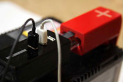
PowerClip : Emergency EnergyCompact unit to charge appliances from a car battery during disaster relief. -
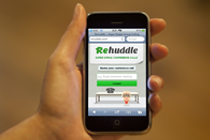
Rehuddle : Web ConferencingThe web's fastest, simplest and most cheerful conference calling service. -
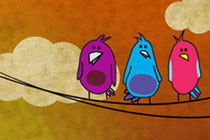
Guinness World RecordMulti-player game for live audiences using smartphones as game controllers. -
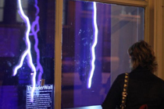
Interactive Window DisplayA shop window installation allowing passers-by to interact through glass. -
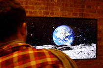
Interactive Parallax ScreenA display that changes perspective depending on the viewer's position. -
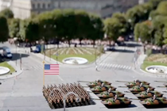
Parading Data : A VisualizationVisualization built with Processing to display data as an animated parade. -
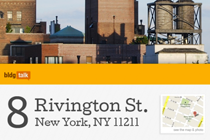
BldgTalk : Your home onlineCommunity portal enabling residents to coordinate around issues of concern. -
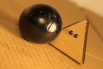
The Myth of PyramisStop-motion animation shortlisted for the Lower East Side Film Festival. -
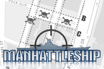
Manhattleship : A game mashupTeams race across a Manhattan grid to locate coordinates of enemy ships. -
StreetEyes : Mobile AppConnecting users with real-time data based on the location of other users.
-
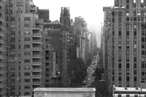
La Serviette : A Short FilmShort film about a napkin and a chance encounter inspired by Jean-Luc Godard. -
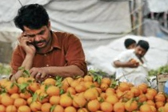
MotrepreneurA scheduled phone call education system built with Ruby and Asterisk. -
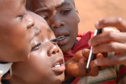
SMS Child Crisis LineA nationwide SMS line in South Africa connecting senders with social services. -
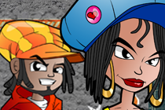
Moraba : Mobile Gender GameA mobile game designed to educate young people about gender issues. -
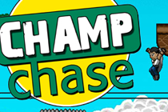
Champ Chase : Mobile GameA game designed for a child protection campaign in South Africa. -
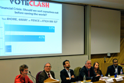
Voteclash : Interactive DebatingA live debate format using SMS voting to engage the audience. -
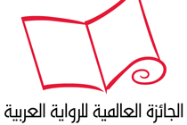
International Arabic Fiction PrizeCoordination of the launch of the Arabic Booker Prize. -
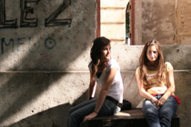
Shakespeare in the BalkansA theater project addressing ethnic tensions in Bosnia. -
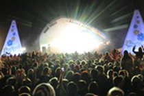
Beach Break Live FestivalEarly branding and operations for the UK's largest student music festival. -
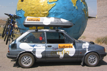
Mongolia Charity RallyPublished photos and writing covering a journey from London to Mongolia.